AI 이미지·영상과 목소리
영상은 첫 화면부터 여섯 개를 한꺼번에 보여 줘요. 노란 '무료·깃허브' 딱지가 붙은 ComfyUI, VoiceStudio, OpenSEO, AppFlowy 카드 아래에 회색 '유료' 딱지의 Wispr Flow와 Loom이 깔려 있어요. 유료 앱 자리를 무료 대안이 덮어 가는 장면이에요.
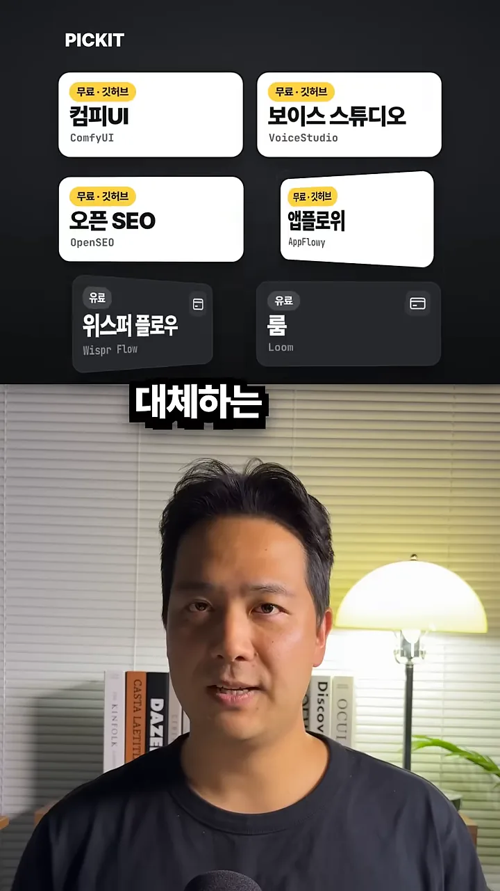
Higgsfield 대신 ComfyUI
Higgsfield는 이미지나 영상을 하나 만들 때마다 크레딧이 빠져요. ComfyUI는 '내 컴퓨터' 안에서 돌아가요. 화면 가운데 노트북 속에 '모델'과 '프롬프트' 상자가 선으로 이어져 '이미지'와 '영상' 상자로 들어가요. 이렇게 상자를 이어 작업 순서를 짜는 방식을 노드 방식이라고 해요. 양옆에는 그렇게 뽑은 그림과 영상이 쌓여 있어요.
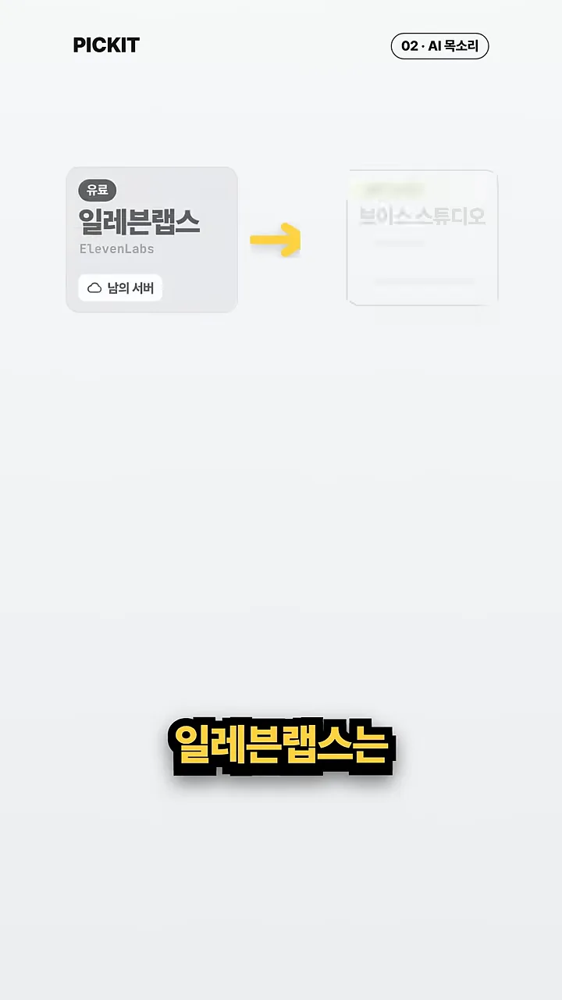
ElevenLabs 대신 VoiceStudio
ElevenLabs 카드에는 '남의 서버'라는 표시가 붙어 있어요. VoiceStudio는 목소리 복제와 새 목소리 설계를 전부 로컬에서 해요. 화면 위 '내 목소리' 파형 아래에 노란 '복제' 파형이 똑같은 모양으로 그려져요.
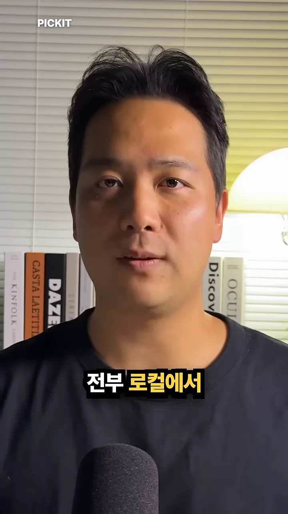
SEO 분석과 노트
Semrush 대신 OpenSEO
왼쪽 Semrush 카드에는 '비싼 월 구독'이, 오른쪽 OpenSEO 카드에는 저장소 주소 every-app/open-seo가 적혀 있어요. 아래는 실제 깃허브 저장소 화면이에요.
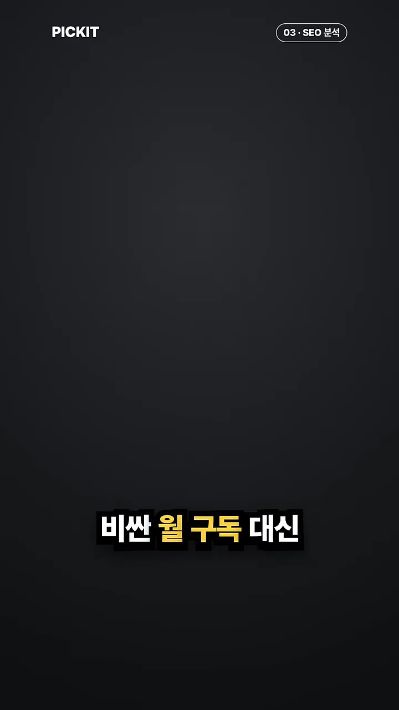
OpenSEO로 할 수 있는 일은 탭 세 개로 나뉘어요. 순위 추적, 백링크, 사이트 점검이에요. 사이트 점검 탭을 열면 페이지 속도, 제목·설명, 깨진 링크, 모바일 화면을 하나씩 확인해요. 영상은 이걸 월 구독 대신 쓴 만큼만 내고 쓸 수 있다고 말해요.
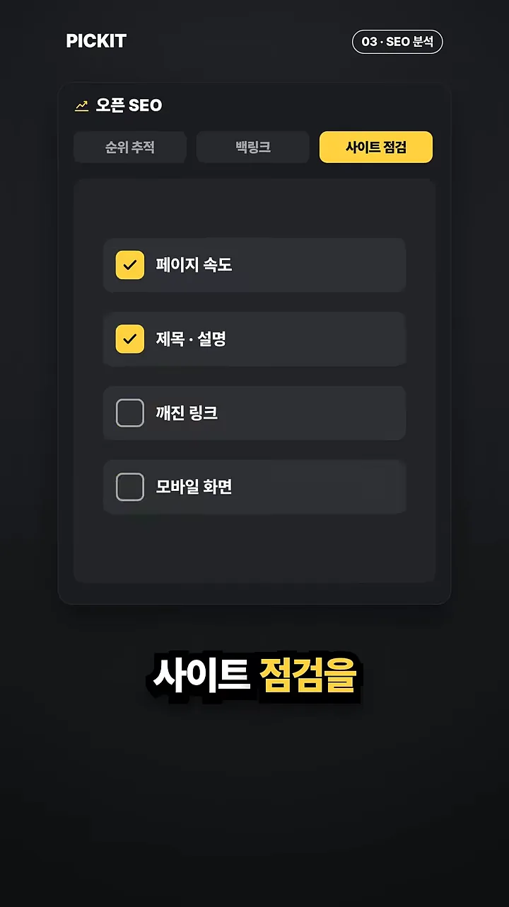
Notion 대신 AppFlowy
AppFlowy로도 노트, 문서, 위키를 다 쓸 수 있어요. 차이는 데이터가 어디 있느냐예요. 화면에서 '남의 서버' 구름 아이콘이 흐려지며 닫히고, '내 노트북'의 폴더가 밝게 켜져요.
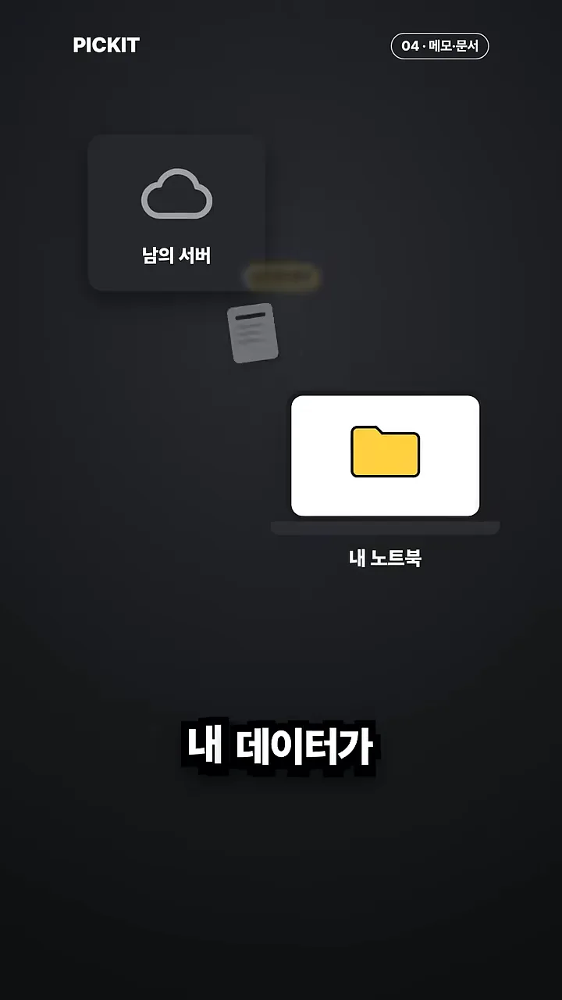
말로 입력하기와 화면 녹화
Wispr Flow 대신 OpenWhispr
Wispr Flow는 월 구독이에요. 대안인 OpenWhispr의 저장소는 OpenWhispr/openwhispr이고, 카드 아래에 깃허브 화면이 나와요.
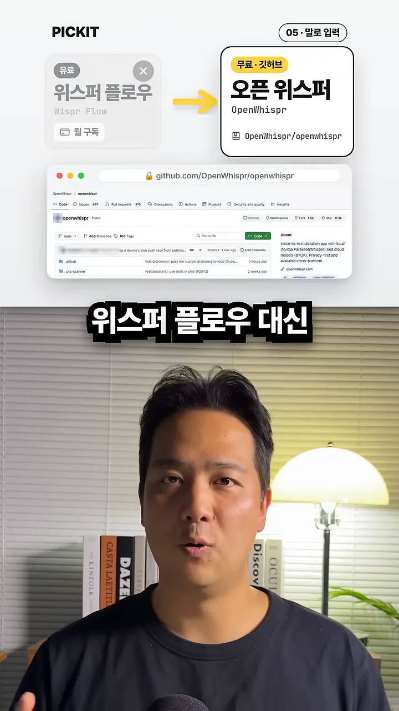
쓰는 방법은 '단축키 + 마이크' 하나예요. 화면 아래 메모, 메일, 메신저, 문서 창 네 개는 어느 앱에서든 말한 내용이 글로 들어간다는 뜻이에요. 영상은 오프라인에서도 된다는 점을 가장 편한 점으로 꼽아요.
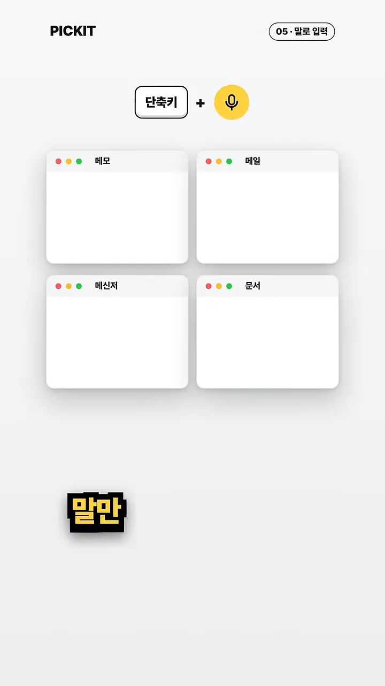
Loom 대신 Cap
Loom도 월 구독이에요. 대안인 Cap의 저장소는 CapSoftware/Cap이에요.
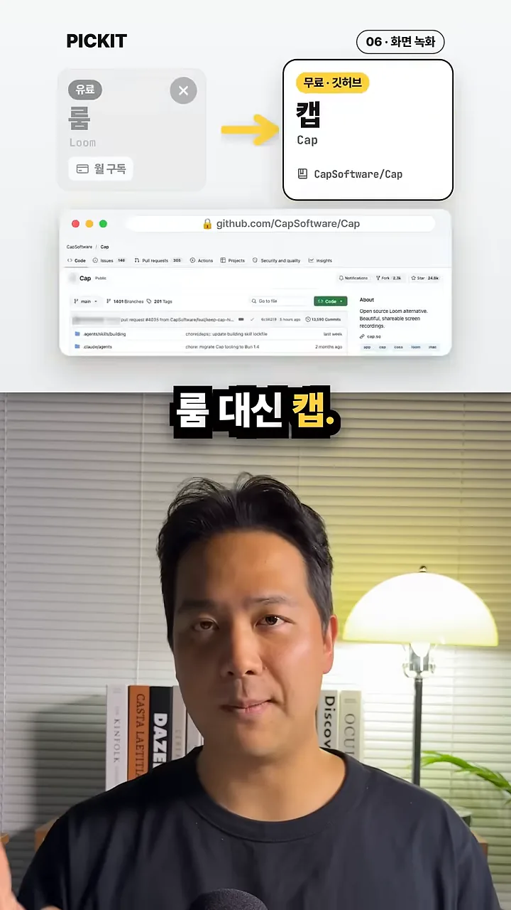
녹화를 멈추면 '녹화 끝' 표시와 함께 공유 링크 창이 떠요. '링크 복사' 버튼 아래에 메신저, 메일, 고객에게 보내는 버튼이 있어요. 화면 아래 작은 글씨로 'Cap 무료는 개인용, 사업용은 유료 라이선스'라고 적혀 있어요.
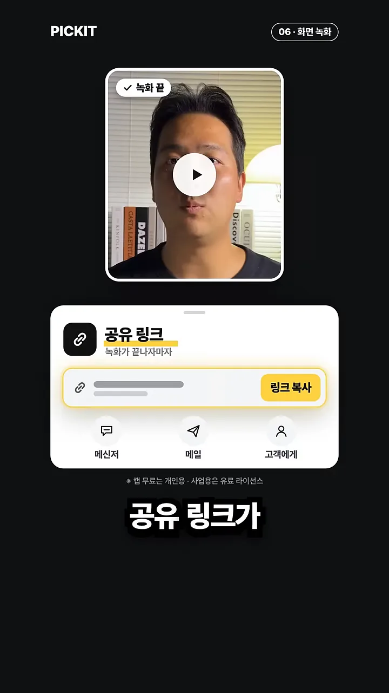
여섯 쌍 한눈에 보기
영상 끝 표는 왼쪽 유료 앱과 오른쪽 깃허브 무료 대안을 한 줄씩 이어요. 표 아래에는 '소프트웨어는 무료·일부는 그래픽카드·API 키 필요·제휴 아님'이라는 안내가 있어요.
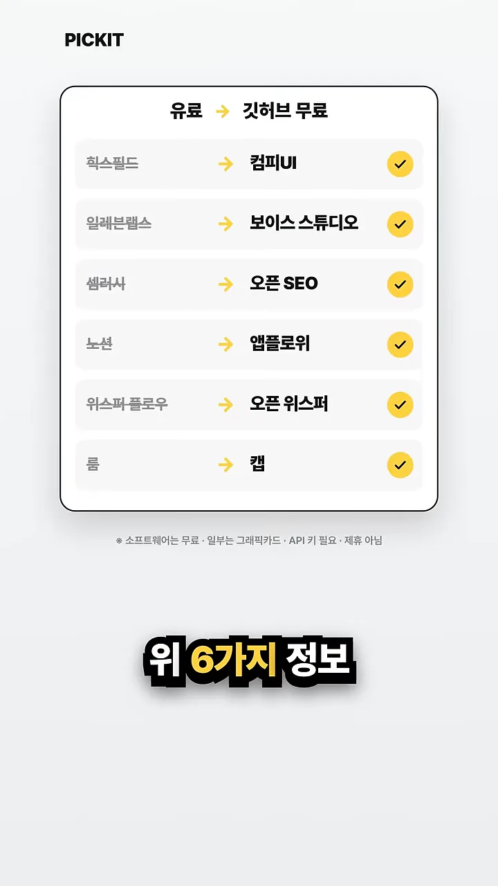
| 하는 일 | 유료 앱 | 무료 대안 | 영상이 꼽은 장점 |
|---|---|---|---|
| AI(Artificial Intelligence) 이미지·영상 | Higgsfield | ComfyUI | 만들 때마다 크레딧이 빠지지 않아요 |
| AI 목소리 | ElevenLabs | VoiceStudio | 복제와 설계를 로컬에서 해요 |
| SEO 분석 | Semrush | OpenSEO | 월 구독 대신 쓴 만큼만 내요 |
| 메모·문서 | Notion | AppFlowy | 데이터가 내 노트북에 남아요 |
| 말로 입력 | Wispr Flow | OpenWhispr | 어느 앱에서든 되고 오프라인에서도 돼요 |
| 화면 녹화 | Loom | Cap | 녹화를 멈추면 바로 공유 링크가 나와요 |